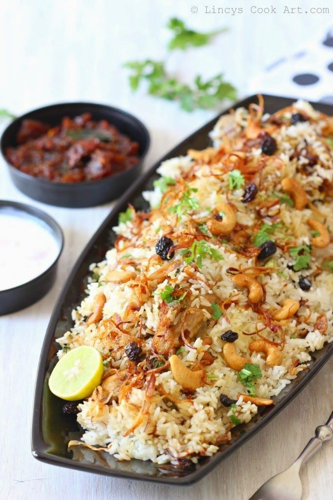

Kozhikode Chicken Biryani

Category: Biriyani
Ingredients:
- 6 cups Basmati or Jeerakasala rice
- 4 tsp Ghee or Clarified Butter
- 4 tsp Oil
- 5-6 Cloves
- 3-4 small pieces Cinnamon
- 2 Bay leaves
- 5-6 Cardamoms
- ½ Onion (diced)
- 2 tsp Salt or to taste
- 5 cups Water
For Chicken Marination:
- 1½ lbs Chicken (cut into pieces)
- 3 cups Yogurt
- 1½ cups Coriander leaves (chopped)
- 1 cup Mint leaves (chopped)
- 1 tbsp Ginger-Garlic paste
- 2 Green chilies (slit)
- ½ tsp Turmeric powder
- 1 tsp Chili powder
- Salt to taste
Instructions:
- Wash and soak rice for 30 minutes. Cook rice with whole spices, onion, salt, and water until 90% done.
- Marinate chicken with yogurt, herbs, and spices for at least 1 hour.
- In a large pan, cook marinated chicken until tender and oil separates.
- Layer the rice over the cooked chicken. Drizzle ghee. Cover and cook on low flame (dum) for 15–20 minutes.
- Gently mix before serving. Serve hot with raita and pickle.
← Back to Home